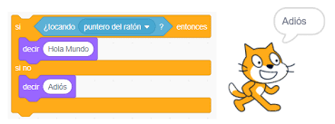

Diccionario
Pulsador
- Definición:
-
Pieza de un aparato programable para realizar una determinada acción.
- Ejemplo:
-
Pulsa el botón para llamar al ascensor.
Led
- Definición:
-
Es una fuente de luz formada por un material semiconductor dotado con dos terminales.
Condicionales

- Definición:
-
Te permiten realizar una decisión entre la elección de una opción y otra.
- Ejemplo:
-
Si tocas con el puntero de ratón entonces decir Hola, si no decir adios.